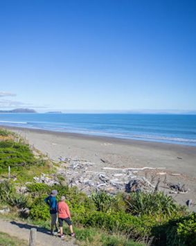
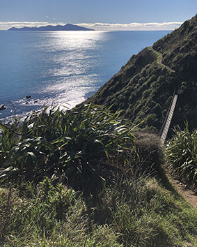
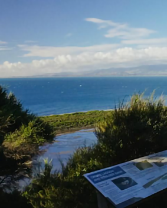
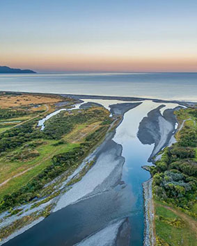
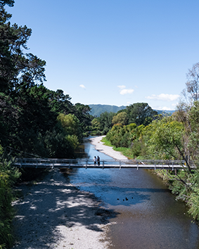

This coastal track winds through sand dunes between Paekākāriki and Raumati South. The sea, inland hills, and Kapiti Island will be a constant companion. On a clear day, you can see as far south as the South Island and north to Mount Ruapehu and Taranaki Maunga.
The well-maintained wide track is sign-posted. Keep an eye out for the birds commonly seen in the coastal habitat, including tūī, wax eye, fantail, goldfinch, yellowhammer, oystercatchers, and the more exotic white-faced heron.
The track is split into two sections that meet at Mackays Crossing. The southern section between Paekākāriki and Mackays Crossing is about 2km or 1-1.5 hours return. Take a picnic and stop at one of the large, grassy areas, or join one of many secondary pathways linking to the Inland Track to return a different way.
From Mackays Crossing to Raumati South, the northern section is 1.5km (1-hour return). In this section, you’ll see the progress of local sand dune restoration projects to encourage native plant regeneration.
The Escarpment Track runs from Paekākāriki to Pukerua Bay, taking in sweeping views of the spectacular Kāpiti Coastline and Kapiti Island. The trail can be walked in either direction, but most choose to walk from north to south.
Heading south, the trail follows the Kāpiti railway line, then veers uphill and across privately-owned farmland. You’ll climb 220 metres above sea level and navigate steep, narrow pathways on what is one of the highlights of Te Araroa Trail.
Families of all ages enjoy this trail, but it is not recommended for the faint-hearted: you’ll scale around 1,200 steep steps, navigate narrow pathways across ridgelines, and traverse two swing bridges.


Okupe Valley Loop Track is an easy 4.8km loop. After arriving on shore at the northern end landing point, you will have a 30-minute introductory talk explaining the history and ecology of the island.
Follow the signpost for the Opuke Valley Loop Track. Walk through grassland, shrubland and regenerating forest up to the lookout point. The lookout at 198 metres elevation has fantastic views of the beautiful, freshwater Ōkupe Lagoon and the western cliffs. The northern end trails have easy walking access to a variety of landscapes from coastal areas to mature forest.
The landscape and views at this end of the island are very different to the nature reserve at Rangatira. As you move inland, takahe, weka, kākāriki, and the North Island robin live in shrubland. See the tūī, bellbirds, kākā, and kererū in the regenerating five finger and mahoe forest, or denser mature kohekohe and tawa bush.
Generally considered an easy route, the gravel track starts from the river mouth at Ōtaki beachfront and continues past State Highway 1 all the way to a lagoon at Chrystalls Bend Walkway.
Horses are allowed, except on private land upstream of Chrystalls Lagoon, on the northern side of the river, and iwiland (Ngāti Huia ki Katihiku) on the southern river bank.
Walk under regenerating native trees and enjoy views of the coastline, river, and the Tararua Range. This track is for all fitness levels and is perfect for the whole family to enjoy.


The Waikanae River Trail and estuary is a nationally significant area. Native birds use it as they travel between the Tararua Range and Kapiti Island. Part of the national Te Araroa Trail, it winds along the Waikanae River beside established willows, young native planting, and lagoons. It offers wide gravel paths suitable for wheelchairs, buggies, horse riding.
The trail can be walked or cycled as a full loop, crossing at the old State Highway 1 bridge at Otaihanga Domain. Shorter loops can be planned, crossing at the Kāpiti Expressway or the Te Arawai footbridge.
Horse riding is also welcome along the trail, following the blue track markers to cross the river in shallow areas.
There are plenty of safe swimming areas, including a popular swimming hole opposite the side track to Otaraua Park. You can also take the track down to the sea and swim there.